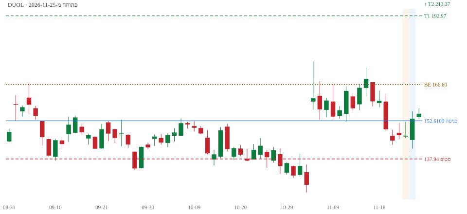

פוזיציות פתוחות
| גרף | טיקר | כיוון | סטאפ | נפתח | כניסה | מניות (נותר/סה״כ) | עלות | מחיר | רווח לא ממומש | R כולל | סטופ | BE | יעדים | סיכון פתוח | יציאה לפני דוח |
|---|---|---|---|---|---|---|---|---|---|---|---|---|---|---|---|
 | DUOL | לונג | trendline | 2026-11-25 | 152.6100 | 13/13 | $1,983.93 | 153.54 | +$12.09 | 0.06R | 137.94 | 166.60 | 192.97 (2.75R) 213.37 (4.14R) | $190.71 | 2027-02-23 |
R כולל = (רווח ממומש + לא ממומש) ÷ הסיכון המתוכנן. ✓ = יעד שהושג. BE ✓ = הסטופ כבר הוזז לכניסה. המחיר הוא העסקה האחרונה בזמן העדכון.